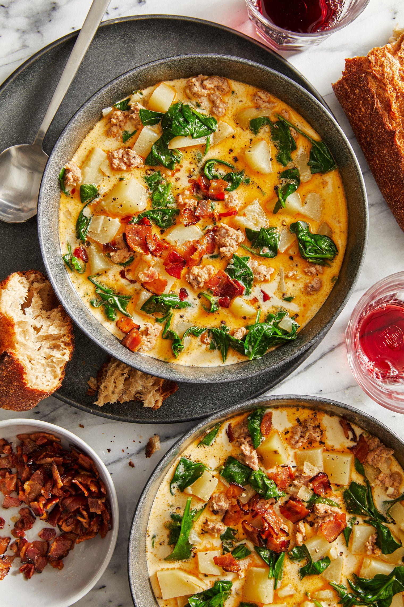

Zuppa Toscana
Zuppa Toscana

Description
A hug in a bowl. Zuppa Toscana, or Tuscany Soup, is the ultimate comfort soup, perfect for the cooler, rainy days. A balanced meal
in one pot. Hearty potatoes make this soup filling, while the dino kale soaks up the creamy broth. Spicy Italian
sausage adds just enough warmth and spice. This soup is perfect for dipping your favorite crusty bread. Zuppa Toscana
is not only super easy, it is super tasty- a fantastic weeknight meal for the family!
Ingredients
- 5-8 Golden Potatoes
- 4-6 Garlic Cloves
- 1 Large Onion
- 1 cup (16 oz) Chopped Kale
- 1/2 lb (8oz) Spicy Italian Sausage
- Extra Virgin Olive oil
- 1 can (8oz) Canellini Beans
- 3-4 Slices of Bacon
- 1 cup (8 oz) Heavy Whipping Cream
- 2 cups (16 oz)Unsalted Chicken Stock
- 1/4 cup Parmesan Cheese
- Italian Seasoning
- 1-2 Bay Leaves
- Kosher salt
- Pepper
Chop and drop...
- Dice the bacon and add it to a large pot over medium heat. Render the fat and remove when bacon has crisped.
- Dice the onion and saute in the bacon fat until transluscent.
- Chop the garlic and add to the pot with the onions.
- Dice or cut potatoes to small bite sized chunks and drop them into the pot. Saute 5 minutes.
- Season with salt, pepper, Italian seasoning, and add the bay leaves.
- Once fragent, add your sausage and brown, 10-12 minutes.
- Add the beans with their liquid. Pour the cream and chicken stock.
- Bring to boil, cover with a tilted lid and simmer for 20 minutes.
- Add the dino kale 5 minutes before serving. Stir well.
Plate up...
- Ladle soup in a bowl.
- Searve with your favorite crust Italian bread (optional).
- Finish soup off with freshly grated parmesan cheese and crispy bacon.
- Enjoy!